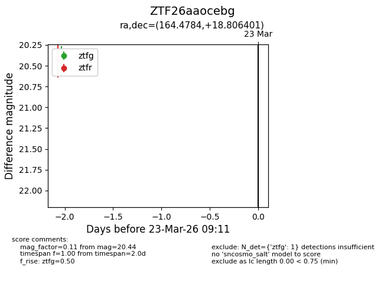
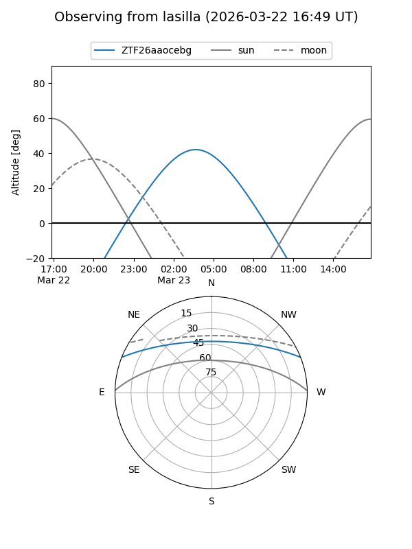
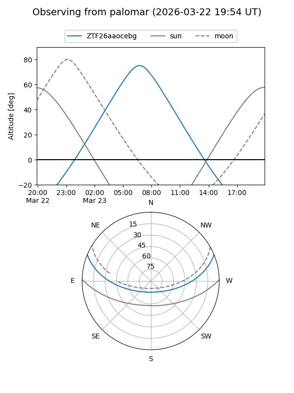

ZTF26aaocebg
Target ZTF26aaocebg at 2026-03-23 09:13
Aliases and brokers:
FINK: link
Lasair: link
ALeRCE: link
alt names
ZTF26aaocebg (ztf,fink_ztf)
Coordinates:
equatorial (ra, dec) = 164.4784,+18.80640
equatorial (HMS+DMS) = 10:57:54.82,+18:48:23.04
galactic (l, b) = (224.5918,+62.64917)
Flags:
Photometry:
last ztfg=20.44
1 ztfg detections
Lightcurve

Visibility


Additional plots